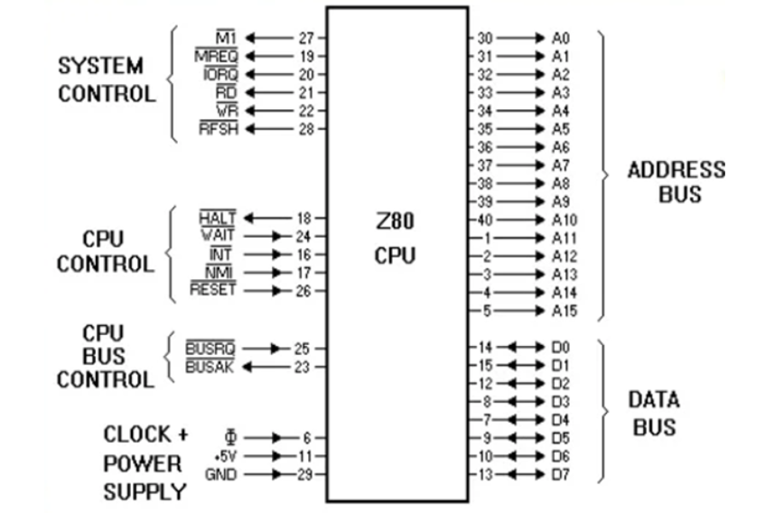
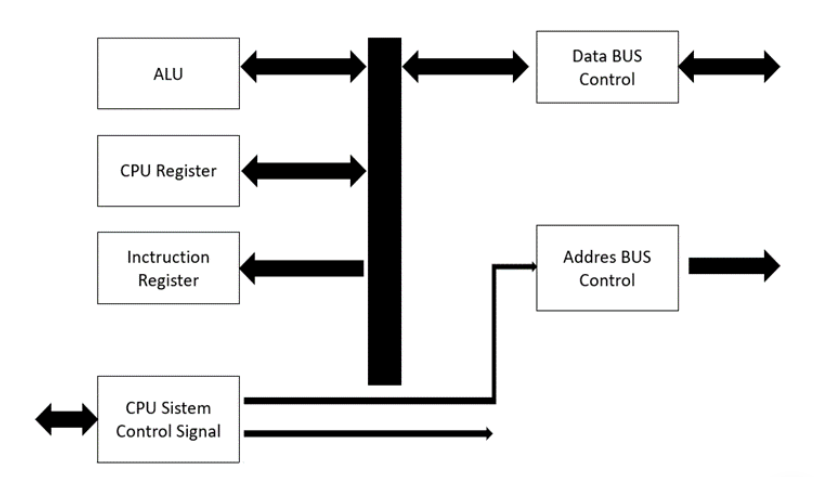

BUS SALURAN ALAMAT
MIKROPROSESOR Z80
Setiap mikroprosesor mempunyai bentuk dan disain arsitektur yang berbeda antara yang satu dengan yang lainnya dan masing-masing mempunyai keunggulan dan kelemahan. Arsitektur mikroprosesor yang diperkenalkan pada bahasan ini, yaitu Z 80, 8085, 6800, 68020, 80486, dan Pentium.
tipe mikroprosesor Z80 dapat menjalankan instruksi untuk mikroprosesor 8080 ataupun 8085, program yang menggunakan prosesor 8086 dapat dijalankan oleh prosesor yang lebih tinggi (80186, 80286, 80386, 80486 dan seterusnya) namun tidak dapat program (80186, 80286, 80386, 80486 tidak dapat dijalankan oleh prosesor dibawahnya. Tetapi yang akan dijelaskan secara mendalam yaitu mikroprosesor Z 80.
MIKROPROSESOR Z80
Mikroprosesor Zilog Z80 dikembangkan oleh Zilog Inc. dan mulai dipasarkan pada tahun 1976. Z80 merupakan sebuah mikroprosesor satu chip dan dimaksudkan untuk menggantikan Intel 8080 yang memerlukan dua chip tambahan (sebuah penghasil detak sistem dan sebuah pengontrol sistem) untuk membentuk sebuah CPU yang fungsional.
Pada mikroprosesor Z80, ada Arithmetic Logic Unit (ALU) dan juga register CPU yang digunakan untuk menyimpan data sementara. Register-register ini menyimpan hasil hitungan atau cacatan untuk melakukan suatu operasi tertentu secara berulang kali.
Ururan-urutan instruksi merupakan program yang disimpan pada memori, dialirkan melalui bus data secara berurutan, kemudian pada bus dalam, sampai pada register instruksi. Semua instruksi dikaji, dan sistem control mengirim isyarat-isyarat untuk pengendalikan baik ke luar atau ke dalam mikroprosesor.
Di dalam CPU Z80 terdapat 22 register, yaitu 18 register yang berkapasitas 8 bit dan 4 register berkapasitas 16 bit. Register ini dapat dipakai dan diprogram oleh pemakai. Mikroprosesor Z80 memiliki saluran – saluran BUS yaitu
o Bus saluran Alamat (Address Bus)
o Bus saluran Data (Data Bus)
o Bus saluran Kendali (Control Bus)
BUS SALURAN ALAMAT
Saluran alamat (address bus) diperlukan untuk menentukan suatu lokasi alamat memori maupun lokasi alamat dari perangkat input/output (Input Output Interface) yang selalu digunakan dalam suatu sistem mikroprosesor itu sendiri, sebab jumlah saluran yang ada langsung menentukan banyaknya alamat memori (kapasitas memori) yang dapat ditanganinya.
A. MEMORI ADDRESS
Pada mikroprosesor buatan Zilog dengan tipe Z80 juga memiliki kapasitas memori sebesar 64 kbyte. Penyemat saluran alamat pada suatu mikroprosesor pada umumnya diberi tanda dengan huruf A, oleh karena jumlah saluran alamat ada 16 buah dan masing-masing saluran memilki bobot yang berbeda, maka saluran alamat yang berbobot paling rendah (least significant bit, LSB) diberi tanda A0 dan selanjutnya urut hingga saluran terakhir yang memiliki bobot terbesar (most significant bit, MSB) diberi tanda A15. dengan demikian saluran alamat yang terdapat pada mikroprosesor tipe Z80 yang berjumlah 16 buah saluran, masing-masing diberi tanda A0, A1, A2, A , A4, A5, A6, .........................A15. Untuk lebih jelasnya dapat dilihat pada blok berikut

A0 bobotnya = 20 = 1 alamat, A1 bobotnya = 21 = 2 alamat
A2 bobotnya = 22 = 4 alamat, A3 bobotnya = 2 = 8 alamat
A4 bobotnya = 24 = 16 alamat, A5 bobotnya = 25 = 32 alamat,
A6 bobotnya = 26 = 64 alamat, A7 bobotnya = 27 = 128 alamat,
A8 bobotnya = 28 = 256 alamat, A9 bobotnya = 29 = 512 alamat,
A10 bobotnya = 210 = 1024 alamat, A11 bobotnya = 211 = 2048 alamat,
A12 bobotnya = 212 = 4096 alamat, A13 bobotnya = 213 = 8192 alamat
A14 bobotnya = 214 = 16384 alamat, A15 bobotnya = 215 = 32768 alamat
Jumlah total adalah = 65535 + alamat 0 = 65536 alamat. Dengan demikian nomor alamat pada mikroprosesor Z80 dengan menggunakan besaran sistem bilangan desimal adalah dari alamat 0 sampai dengan 65535.
B. I/O ADDRESS
Selain terdapat alamat-alamat yang dapat digunakan untuk menghubungi perangkat ingatan, pada CPU Z80 juga memiliki alamat-alamat yang digunakan untuk keperluan penanganan perangkat-perangkat I/O sebanyak 256 alamat. Sebagaimana pengaturan alamat pada sistem ingatan, maka alamat I/O ditangani oleh address bus bagian bawah (A0 sampai A7) sebanyak 8 saluran. Dalam kode heksadesimal alamat I/O adalah 00-FF. Sedangkan address bus bagian atas (A8-A15) digunakan untuk buffer (penyangga) data. Jadi pada address bus memiliki fungsi ganda sebagai alamat ingatan dan alamat masukan atau keluaran.

Data bus (saluran data) diperlukan sebagai jalan masukan atau keluaran data yang berfungsi sebagai instruksi atau penyerta instruksi antara perangkat ingatan dan perangkat I/O dengan CPU. Untuk mikroprosesor Z80 memiliki 8 buah saluran data (D0- D7) atau 8 bit data. Sifat dari saluran data adalah dua arah (bidirectional), jadi arahnya dapat bolak-balik antara mikroprosesor dengan perangkat ingatan maupun perangkat masukan keluaran

Saluran kendali (Control Bus) digunakan untuk melakukan pengendalian terhadap komponen-komponen pendukung dalam sistem mikroprosesor. Semua aktifitas lalu lintas data maupun pengambilan instruksi ke perangkat ingatan, perangkat keluaran masukan dan lain-lainnya diatur dan dikendalikan lewat saluran kendali tersebut. Pada mikroprosesor saluran-saluran kendali ada dua kelompok yaitu: o Saluran kendali yang bersifat keluaran, artinya suatu pengendalian yang arahnya dari mikroprosesor menuju ke perangkat pendukung (perangkat ingatan, I/O, dekoder dan lain-lainnya). o Saluran kendali yang bersifat masukan artinya suatu pengendalian yang arahnya dari perangkat luar mikroprosesor menuju ke mikroprosesor tersebut.
Rancang Bangun Mikroprosesor
Dalam sebuah Mikroprosesor terdiri dari bagian-bagian yang satu dengan yang lain saling melengkapi dan mendukung dalam memproses serta menterjemahkan berbagai macam intruksi yang diberikan kepadanya untuk selanjutnya dikerjakan kemudian setiap menerima instruksi selanjutnya.
Susunan dari bagian-bagian tersebut dikenal sebagai rancang bangun dari sebuah mikroprosesor (Mikroprosesor Architectur). Untuk mikroprosesor tipe Z80 memiliki rancang bangun seperti terlihat pada Gambar dibawah. Dari diagram rancang bangun mikroprosesor Z80 pada Gambar dibawah setiap bagian dapat dijelaskan sebagai berikut :
.jpg)
Gambar Diagram Rancang Bangun Mikroprosesor Z80
Dari diagram rancang bangun mikrprosesor z80 di samping setiap bagian akan dijelaskan sebagai berikut :
CPU Z80 juga tersusun atas sebuah Stack Pointer, Program Counter, dua buah register indeks, sebuah register Refresh (counter), dan sebuah register interupsi.CPU Z80 juga sangat mudah disertakan pada sistem karena hanya memerlukan sumber tegangan tunggal +5V. Semua sinyal output sepenuhnya di-decode dan di-time untuk mengontrol sirkuit memori atau periferal standar. CPU Z80 didukung oleh perluasan keluarga pengontrol periferal.
Diagram blok internal memperlihatkan fungsi utama dari prosesor Z80. Bagian-bagian utama mikroprosesor Z80 adalah:
• ALU (Aritmatic and Logic Unit), bagian ini merupakan pusat pengolahan data. Di bagian ini dilakukan operasi-operasi logika, seperti: AND dan OR, serta operasi-perasi aritmatika, seperti: penjumlahan dan pengurangan.
• Larik Register (Registers Array), merupakan kumpulan register-register yang terdiri dari register serba-guna dan register fungsi khusus.
• Register Instruksi (Instruction Register), merupakan tempat untuk menyimpan sementara instruksi yang akan diterjemahkan oleh penerjemah (decoder) instruksi.
• Decoder (Penerjemah) Instruksi (Instruction Decoder), merupakan bagian yang berfungsi dalam menerjemahkan instruksi yang diambil dari memori setelah sebelumnya melewati register instruksi.
• Kontrol Pewaktuan CPU (CPU Timing Control), bagian ini berfungsi dalam mengendalikan kerja CPU secara keseluruhan dan juga pewaktuan bagi periferal atau memori yang memiliki hubungan dengan CPU.
• Antarmuka Bus Data (Data Bus Interface), bagian ini merupakan pintu gerbang untuk keluar-masuk data dari dan ke CPU.
• Penyangga dan Logika Alamat (Address Logic and Buffer), bagian ini berfungsi dalam menyediakan alamat memori atau I/O yang diakses oleh CPU.
• Bus Data Internal (Internal Data Bus), di bagian ini lalu lintas data dalam CPU berlangsung.
Fitur yang ada didalam Zilog 80
1. Perluasan set instruksi terdiri dari 158 instruksi, termasuk 78 instruksi 8080A sebagai subsetnya (semuanya kompatibel). Instruksi baru termasuk operasi 4-, 8- dan 16-bit dengan mode pengalamatan lebih berguna seperti pengalamatan terindeks, bit, dan pengalamatan relatif.
2. Chip tunggal. Dengan versi NMOS untuk solusi harga rendah kinerja tinggi, sementara versi CMOS untuk rancangan kinerja tinggi berdaya rendah
3. Mikroprosesor Z80 dan keluarga periferal Z80 bisa dihubungkan dengan sebuah sistem interupsi tervektor. Sistem ini bisa dihubungkan secara daisy-chain yang mengijinkan implementasi skema interupsi terprioritas.
4. Penggandaan kumpulan (set) register serba-guna dan flag
5. 17 register internal termasuk dua register indeks 16-bit
6. Tiga mode interupsi maskable
7. Pencacah refresh memori dinamis dalam chip
8. Antarmuka langsung dengan memori dinamis atau statis kecepatan standar tanpa membutuhkan logika eksternal
9. Kinerja jauh di atas mikroprosesor chip tunggal lain dalam aplikasi 4-, 8-, atau 16-bit
10. Semua pin kompatibel dengan level tegangan TTL (TTL Compatible).